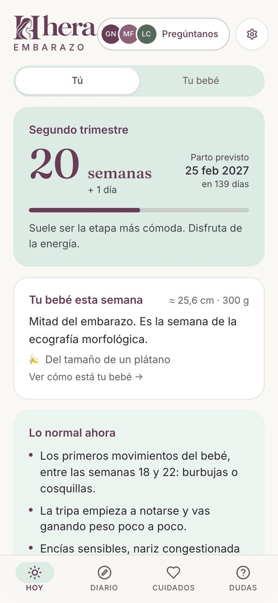
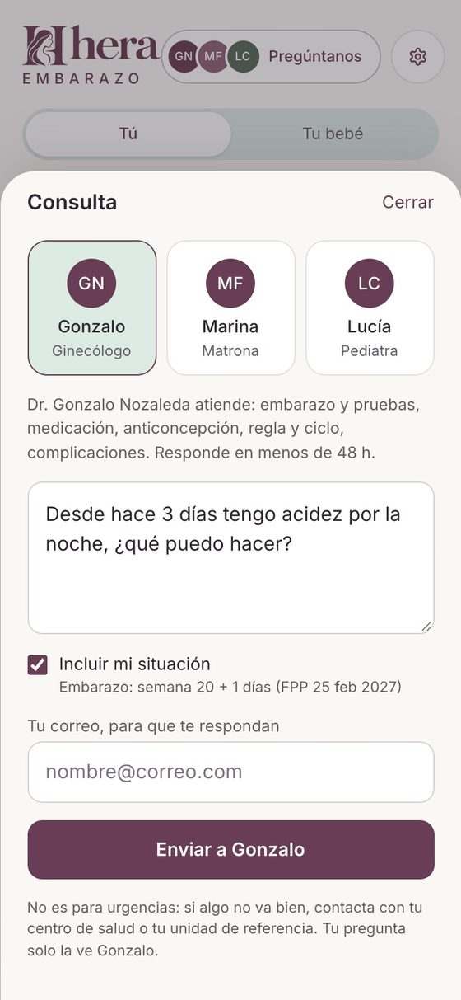
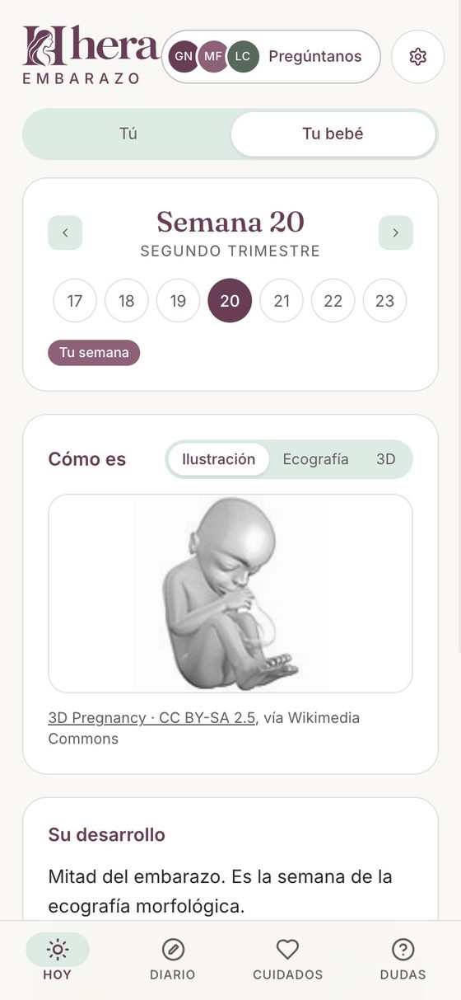
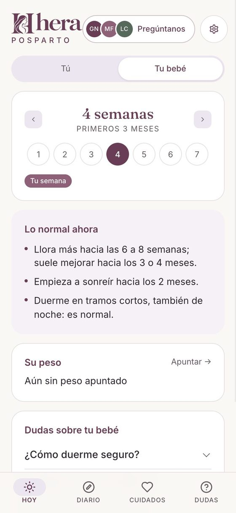

Dr. Gonzalo Nozaleda
Ginecólogo
Embarazo y pruebas, medicación, anticoncepción, la regla y el ciclo, y cualquier complicación.
Pregunta a GonzaloEmbarazo · Posparto · Bebé
Cada semana, lo que te toca saber. Y cuando algo te preocupe, pregúntaselo a tu ginecólogo, tu matrona o tu pediatra.
¿Solo quieres mirar? Abre Hera y sigue tu embarazo semana a semana.
Gonzalo, Marina y Lucía
Ginecólogo, matrona y pediatra. Te responden en menos de 48 h.

Cómo funciona
Con tus palabras. Si quieres, Hera añade tu semana de embarazo o la edad de tu bebé para que tengan contexto.
Hera te sugiere ginecología, matrona o pediatría según lo que escribas. Siempre puedes cambiarlo.
En menos de 48 h, de la profesional que la ha leído. Si te queda algo, contestas al mismo correo.

Para cada etapa
Hera se adapta a tu momento: te muestra lo de tu semana y te guarda el resto para cuando llegue.
Cómo crece tu bebé semana a semana, con ilustración, ecografía y modelo 3D; las pruebas de cada trimestre; lo normal en cada momento y un registro de contracciones al final.

Tu recuperación, la lactancia, el suelo pélvico y cuándo vuelve la regla. Con lo que conviene consultar y sin juicios.
Lo normal a su edad, su peso, el sueño, la alimentación y las vacunas. Y cuándo ir a urgencias.

¿No estás embarazada? Hera también te ayuda a seguir tu ciclo.
El equipo
Cada consulta la lee y la responde una de ellas. Nada de respuestas automáticas.
Ginecólogo
Embarazo y pruebas, medicación, anticoncepción, la regla y el ciclo, y cualquier complicación.
Pregunta a GonzaloMatrona
Lactancia, preparación al parto, posparto, suelo pélvico y los cuidados del recién nacido.
Pregunta a MarinaPediatra
La salud y los cuidados de tu bebé: fiebre, alimentación, sueño, desarrollo y vacunas.
Pregunta a LucíaPor qué Hera
Tu privacidad
Tu diario, tus síntomas y tus semanas se guardan en tu dispositivo. Sin cuentas ni contraseñas.
Tu consulta va a la profesional que eliges; tu copia en Google Drive y los avisos, solo si los activas.
No vendemos datos, no mostramos anuncios y no usamos cookies.
Lo explicamos todo, con detalle, en la política de privacidad.
Precio
El contenido de cada semana es gratis siempre. Las consultas, las dos primeras también.
A quien quieras de las tres, sin tarjeta ni registro.
Pagas solo cuando preguntas. Precio próximamente.
Varias consultas a mejor precio. Próximamente.
Preguntas frecuentes
El ginecólogo Gonzalo Nozaleda, la matrona Marina Fernández o la pediatra Lucía Carrascón, según a quién elijas. Hera te sugiere a la persona adecuada, pero siempre puedes cambiarla.
Menos de 48 horas. La respuesta te llega a tu correo y, si te queda alguna duda, puedes contestar al mismo mensaje.
Hera no atiende urgencias. Si tienes un sangrado abundante, pérdida de líquido, fiebre alta, dolor intenso o notas que tu bebé se mueve menos, llama al 112 o acude a urgencias. En la app tienes una guía de cuándo ir.
Lo que apuntas en Hera se queda en tu móvil. Cuando haces una consulta, tu pregunta y tu correo van a la profesional que eliges para que pueda responderte; el texto de tu pregunta no se guarda en ningún servidor nuestro.
Podrás pagar consultas sueltas o un bono de varias. Estamos ultimando los precios; si se te acaban las gratuitas, puedes pedir que te avisemos.
No. Hera funciona en el navegador de tu móvil. Si quieres, puedes añadirla a tu pantalla de inicio para abrirla como una app y recibir avisos cada semana.
Ginecólogo, matrona y pediatra
Pregúntalo y te responde una profesional en menos de 48 h. Tus dos primeras consultas, gratis.
Pregunta tu duda gratisHera informa y acompaña, pero no sustituye a tu médico ni atiende urgencias.